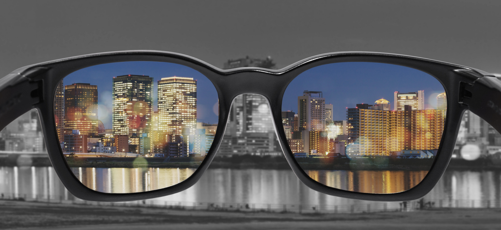

Welcome to my final project for MUC 218 - Digital Arts & Equity
This website is an exploration of colorblindness- both the visual impairment and the social justice impairment.
The core concept explored in this class has been racism within technology. As a student in the Web Development and Design program, I knew I wanted to position my final project towards web design and find a way to relate my learning towards that field. The goal of this website is to express my own personal reflection on the concept of colorblindness as it corresponds to racism in the United States and to provide resources for developing just systems within web design.

Please explore this site to see more of my personal reflections and opinions on what we covered in the class in regards to racism within technology.
Thank you!
~Anna